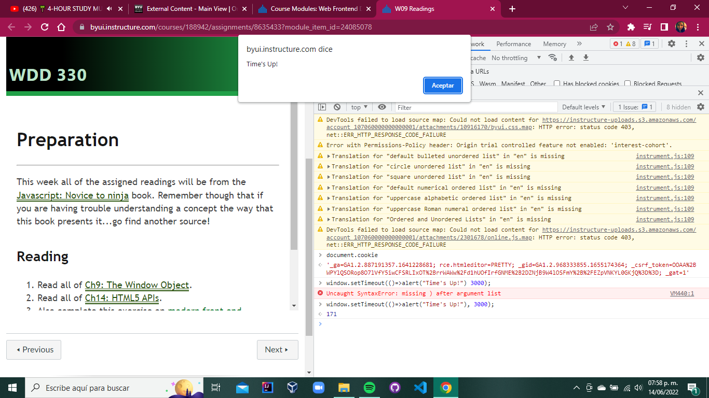
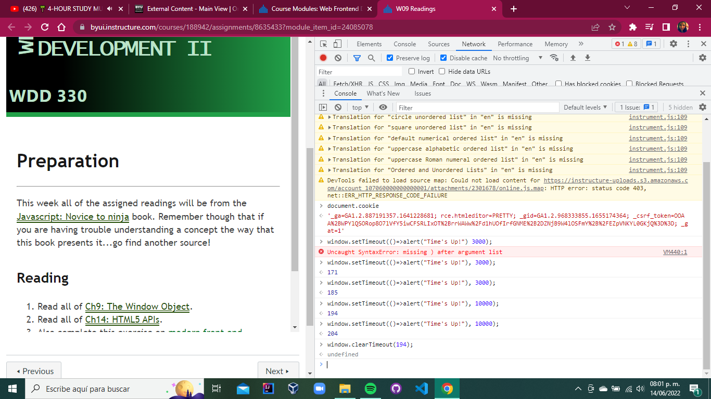
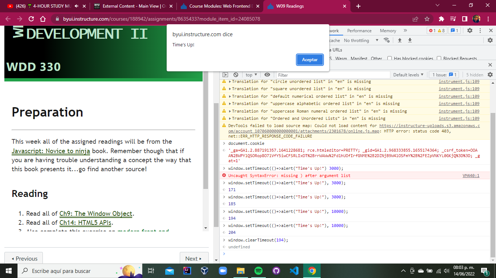

The window object provides some useful methods for scheduling the execution of a function, and for repeatedly executing functions at regular intervals.
The window.setTimeout() method accepts a callback to a function as its first parameter and a number of milliseconds as its second parameter. Try entering the following example into a console. It should show an alert dialog after three seconds (that’s 3000 milliseconds):
The method returns an integer (171). This is an ID used to reference that particular timeout
Calling the method again and again the number that is returned is changed:
It can also cancel the timeout using the window.clearTimeout() method:
We can observe that after calling clearTimeout() method it is set as undefined.